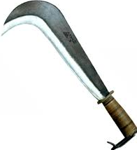

R
A, B, C, D, E, F, G, H, I, L, M, N, O, P, Q, R, RE, RI, RIS, RO, RU, S, T, U, V, X, Y, Z
racimolare v. tr. [der. di racimolo] (io racìmolo, ecc.). – 1. non com. Cogliere i racimoli rimasti sulle viti dopo vendemmiato; per lo più assol.: la vendemmia è finita: ora stanno racimolando. 2. fig. Mettere insieme poche cose, o anche persone, con difficoltà e stento, raccogliendole qua e là: prestandosi a piccoli servizî riesce a r. quanto gli basta per vivere; chi lotta duramente per r. l’indispensabile, ha bisogno di evadere dalla sua miseria conquistando qualcosa di superfluo (Giovanni Guareschi); ascoltando a destra e a sinistra, poté r. qualche notizia; un gruppo di uomini male armati, racimolati per le campagne.
raffazzonare v. tr. [der. del lat. factio -onis «atto di fare», der. di facĕre «fare»] (io raffazzóno, ecc.). – 1. ant. Aggiustare con una certa cura, racconciare, adornare. 2. Accomodare, aggiustare, o più genericam. fare, mettere insieme alla meglio o in fretta, spec. opere o lavori che dovrebbero essere fatti con un certo gusto e impegno: r. una gonna; r. un discorso, un articolo. ◆ Part. pass. raffazzonato, anche come agg., fatto, messo insieme alla meglio, rabberciato: uno scritto, un disegno r.; una r. compagnia di guitti di quart’ordine (Melania Mazzucco); ant., adornato, ripulito.
rapsòdo s. m. [dal gr. ῥαψῳδός, comp. di ῥάπτω «cucire, saldare» e ᾠδή «canto»]. 1. Recitatore e anche cantore, nell’antica Grecia, di componimenti poetici (e a volte prosastici) di carattere epico, sia proprî sia di altri autori (v. anche aedo, che è il nome più antico, usato dall’età di Omero fino al 5° secolo a. C.). 2. a. estens. Chi recita o canta composizioni poetiche popolaresche composte da lui o da altri: gli antichi r. di Scozia; ignoti r. ripresero dunque quella materia (Carducci), cioè la materia epica cavalleresca venuta dalla Francia. b. fig. Nella terminologia critica contemporanea, poeta, autore frammentario.
rapsodia /rapsodìa/ s. f. [dal gr. ῥαψῳδία]. – 1. L’arte, la tecnica e l’attività del rapsodo, e la composizione stessa recitata o cantata: la r. fu praticata nell’antica Grecia; le r. omeriche. Per estens., letter., componimento poetico di carattere epico recitato o cantato pubblicamente: le r. cavalleresche e avventuriere delle piazze e delle strade (Carducci); come titolo di poemetti d’argomento patriottico: Rapsodie garibaldine, di G. Marradi (1899; ediz. definitiva 1907). 2. estens. Riunione di passi o di pensieri di varî autori, collegati insieme in modo da formare un componimento letterario o filosofico unitario: alcuni poemi umanistici sono abilissime r. di immagini classiche; poesia o altro componimento letterario di un singolo autore, risultante dalla giustapposizione di più frammenti; talora con tono spreg.: a ben guardare, i suoi scritti non sono che rapsodie. 3. In musica, composizione strumentale, spesso solistica, nella quale più temi, quasi sempre di origine popolare, vengono svolti in varie interpretazioni succedentisi in forma libera, investite di significati epici o di esaltazione etnica e nazionale, o destinate a valorizzare un qualche virtuosismo strumentale: i più noti esempî si hanno nella produzione pianistica del romanticismo, con F. Liszt (le Rapsodie ungheresi, 1839-40), J. Raff, A. Dvořák, C. Saint-Saëns e E. Lalo, e nelle rapsodie pianistiche di J. Brahms. Rapsodia in blu (ingl. A Rhapsody in Blue), titolo di una composizione per pianoforte e orchestra di G. Gershwin (1924).
ramingo agg. [der. di ramo] (pl. m. -ghi). 1. ant. Di uccello che, uscito dal nido e ancora incapace di volare, salta di ramo in ramo. 2. Che va errando senza una meta precisa e senza un luogo dove poter sostare a lungo: se ne andò per il mondo povero e r.; esuli dalla patria e r. in terra straniera; belle cose da fare scrivere a un povero disgraziato, tribolato, r. (Manzoni); anche nave, barca r.; estens.: Unico spirto a mia vita r. (Foscolo).
ratione materiae 〈razzi̯òne matèrie〉 locuz. lat. (propr. «per ragione della materia»), usata in ital. come avv. – Nel linguaggio giur., indica l’attribuzione della competenza a un determinato organo, di regola giurisdizionale, in base al criterio della materia che forma oggetto della controversia (per es., la Corte d’assise è competente per i cosiddetti «delitti di sangue»).
re- ré [dal lat. re-]. – Prefisso presente in verbi italiani, e nei loro derivati, con valore equivalente a ri- (v.), in quanto esprime per lo più il ripetersi di un’azione nello stesso senso o in senso contrario (reagire, reazione; reiterare, respingere, ecc.); in alcuni casi sussistono le due forme parallele re- e ri- (recuperare e ricuperare; remunerare e rimunerare), e allora la forma con re- è sentita come più dotta; talvolta ha solo funzione derivativa come in refrigerare, rendere freddo. In latino, accanto alla forma re-, esisteva la variante red- in verbi come redigĕre, redimĕre, redarguĕre, ecc., che si ritrova nei verbi italiani redigere, redimere, redarguire, e nei loro derivati.
Rectius in lingua latina è comparativo accrescitivo di recte, quest'ultimo essendo un avverbio di modo che, di per sé, significa "correttamente". Nell'uso comune, specialmente nel linguaggio tecnico giuridico, rectius viene usata per esprimere concisamente il concetto di "più correttamente".
règio agg. [dal lat. regius, der. di rex regis «re»] (pl. f. -gie). – 1. ant. o letter. a. Del re (o della regina), come capo di uno stato monarchico; reale, regale: Non un’ara trovò, dove alle Grazie Rendere il voto d’una r. sposa (Foscolo), di Amelia Augusta figlia del re di Baviera e sposa del viceré Eugenio di Beauharnais. È meno com. di reale1 e di regale1, ma compare a volte in alcune locuz. particolari, spec. del linguaggio ufficiale e burocratico: non manca che il r. assenso alle nozze; godeva del r. favore; potere r.; r. decreto; potestà, maestà r.; palazzo r.; stanze, sale regie; i r. appartamenti; onori r.; r. apparato; r. dinastia (per braccio r., nel diritto intermedio, v. braccio, n. 4 b); e, con riferimento a stati monarchici, è specifico per designare istituti, organismi, cariche statali, o sotto il controllo dello stato: il R. governo, il R. esercito; il R. liceo-ginnasio, la R. università; il R. museo; Teatro r.; la R. procura; il r. procuratore; guardia r. (v. guardia 1, n. 2 a); anche in senso iron. e spreg.: si credevano onoratissimi a fare i r. servitori e i r. sgherri (Settembrini). b. fig. Che si distingue per grandezza o eccellenza: via, strada r., la strada maestra; scala r., la scala principale di un edificio. Talora dell’animo o dei sentimenti: Mostrano a gara animo altiero e r. (Ariosto). 2. Acqua regia: miscela di acido cloridrico e acido nitrico concentrato, nel rapporto volumetrico di 3 : 1, che ha potere di attaccare i metalli mettendo in libertà cloro nascente: è stata così chiamata dagli alchimisti per la sua proprietà di sciogliere i metalli nobili (che non sono invece attaccabili dai due acidi separatamente). 3. Sostantivato al masch., un regio, i regi, nel periodo risorgimentale, un soldato, i soldati del re, spec. con riferimento al Regno sardo e a quello delle Due Sicilie; nell’uso tosc., la carta da gioco che raffigura il re: il r. di picche, di denari. ◆ Avv. regiaménte, non com., regalmente; anche, per decreto reale: le accademie regiamente istituite (Carducci).
reificare v. tr. [der. del lat. res «cosa», attraverso l’ingl. (to) reify e il fr. réifier; v. reificazione] (io reìfico, tu reìfichi, ecc.). – 1. Prendere per concreto l’astratto, cioè considerare concetti, categorie, idee, rapporti astratti alla stregua di oggetti concreti. 2. Far decadere a cosa, trattare alla stregua di cosa materiale: r. l’arte, i valori culturali (in questo sign. il termine è usato, in partic., da scrittori e pensatori marxisti, v. reificazione).
relata refero /... rèfero/ (lat. «riferisco cose riferite [da altri]»). – Frase latina usata spesso quando si riferiscono notizie apprese da altri, delle quali non s’intende assumere la responsabilità. L’espressione ricorda in qualche modo un passo di Erodoto (VII 152), che così illustra i suoi doveri di storico: «ho l’obbligo di dire ciò che vien detto (λέγειν τὰ λεγόμενα), ma non ho l’obbligo di crederci».
relato agg. [dall’ingl. relate, related, che è dal lat. relatus, part. pass. di referre «riferire»], non com. – Che è in relazione con altro oggetto, o è a questo riferito: elementi tra loro r., o non r., spec. in sistemi e strutture.
rèmora1 s. f. [dal lat. remŏra, der. di mora, che ha lo stesso sign.]. – 1. Indugio, dilazione, freno, soprattutto di ordine morale: porre remore nell’esecuzione di un patto, di un accordo; agirò senza remore; non c’è più alcuna r., ormai, al dilagare della corruzione. 2. Nel linguaggio marin., la zona d’acqua tranquilla e quasi oleosa nella scia poppiera di una nave o anche nella scia laterale di una nave che scade trasversalmente per deriva o scarroccio.
renitènte agg. [dal lat. renītens -entis, part. pres. di reniti «resistere, contrastare», der. di niti «sforzarsi»]. – 1. letter. Che oppone forte resistenza: il drago talora i pulcini Dell’aquila ne porta renitenti (Boccaccio); Erta la fronte, armato, E renitente al fato (Leopardi). 2. a. Che si rifiuta di obbedire o di conformarsi ai consigli e ai voleri altrui, a obblighi, norme e disposizioni di legge: essere r., mostrarsi r. ai consigli o a seguire un consiglio; ha un carattere r. a ogni forma d’imposizione. È com. e specifico soltanto nell’espressione giur. r. alla (o raram. di) leva, che non si presenta alla chiamata di leva (v. renitenza); anche sostantivato e talora con uso assol.: c’era solo qualche r. alla leva, non per fede ma per vigliaccheria (R. Viganò); i r. venivano perseguiti a norma di legge. b. ant. Che si rifiuta di pagare le tasse, i contributi dovuti. c. raro. Mano, piede, ecc., r., che per paralisi o altro impedimento non può eseguire normalmente i movimenti.
renitènza s. f. [dal lat. tardo renitentia, der. di renitens -entis «renitente»]. – Il fatto, la caratteristica di essere renitente, in senso intellettuale e spirituale; riluttanza, rifiuto: r. a cedere, ad acconsentire, a obbedire; nessuna r. sarebbe in me di credere alle ragioni, che da più alta intelligenza mi venissero addotte (Galilei). È termine specifico in alcune espressioni giur.: r. alla leva, dove esiste la coscrizione obbligatoria, reato in cui incorre chi, essendo iscritto nelle liste di leva, senza legittimo motivo non si presenta nel giorno indicato nei manifesti di chiamata alle armi, o comunque comunicatogli, alla visita del consiglio di leva per l’arruolamento, o alla nuova visita per la conferma o la revoca della precedente riforma; r. del testimone, quando questi si rifiuta di deporre, senza giustificato motivo; r. dell’imputato, quando questi non si presenta all’interrogatorio, senza addurre un legittimo impedimento. In usi ant. o rari, r. fiscale, alle tasse o alle imposte, rifiuto di pagarle, morosità.
rèssa s. f. [lat. rĭxa «litigio»]. – 1. ant. a. Forte contrasto, litigio, violenza: ressa è una malavoglienza d’animo tra coloro che sono congiunti di sangue (Giamboni). b. Importuna o insistente richiesta per ottenere qualcosa. 2. Affollamento di gente che preme, che si accalca per entrare, per avvicinarsi, ecc.; la massa stessa di persone che così si affolla: nelle strade non si passa per la gran r.; hai visto che r. davanti al cinema?; tutti facevano r. per entrare nello stadio; che cosa è questa ressa?
retrivo agg. [der. dell’avv. lat. retro «dietro, indietro»]. – Che va indietro o che resta indietro, riferito, in senso fig., a chi si oppone al progresso politico, sociale, civile e culturale, ma più per ignoranza e inettitudine che per consapevole volontà (in quest’ultimo senso meglio reazionario): è un uomo r., d’animo r., di tendenze r.; un governo, un regime r.; anche sostantivato: è un r.; di fronte al pericolo del clericalismo ... anche i r. si sono ridotti ad amoreggiare col radicalismo (Gobetti). ◆ Avv. retrivaménte, in modo retrivo.
reumàtico agg. [dal lat. rheumatĭcus, gr. ῥευματικός, der. di ῥεῦμα: v. reuma; il sign. 2 fa riferimento al sign. etimologico di ῥεῦμα, cioè «scorrimento, flusso»] (pl. m. -ci). – 1. In medicina, del reumatismo, che provoca il reumatismo: sintomatologia r., localizzazione r.; dolori r.; malattie r., di origine reumatica (artrosi r., cardiopatia r., ecc.; v. anche reumatismo). In senso stretto, malattia r. (o febbre r.), denominazione moderna del reumatismo articolare acuto (o poliartrite r. acuta), espressioni ormai abbandonate perché riferite esclusivamente alla compromissione delle grandi articolazioni, che costituiscono l’elemento più appariscente ma il meno grave perché transitorio, e trascurano le alterazioni cardiache (endocardite, miocardite, pericardite), più gravi e spesso permanenti; è una malattia infettiva ma non contagiosa, che colpisce soprattutto bambini e ragazzi, e tende a recidivare; è detta anche malattia di Jean Bouillaud, dal nome dell’autore che ne fornì (1836) una compiuta descrizione. 2. In vulcanologia, detto di lave e altri prodotti effusivi ad alta temperatura, emessi da apparati vulcanici, che, per la loro bassa viscosità, sono in grado di fluire e di scorrere prima del raffreddamento e della consolidazione.
reumatismo s. m. [dal lat. rheumatismus, gr. ῥευματισμός, der. di ῥεῦμα: v. reuma]. – Termine medico generico e non ben definito designante un gruppo di affezioni o manifestazioni morbose, acute, subacute e croniche, primitive o secondarie, a carico degli organi dell’apparato locomotore (articolazioni, ossa, muscoli, ecc.) e talora dei nervi, estrinsecantesi con dolori, in passato detti reumi per il loro carattere vagante, mutevole, discontinuo. Le malattie ascrivibili ai reumatismi sono ancora diversamente classificate dai varî autori: tra di esse la malattia reumatica (v. reumatico), l’artrite reumatoide (v. reumatoide), l’artrosi (v.), i r. extra-articolari o fibrositi (gruppo di affezioni dolorose muscolari, a carattere primario: torcicollo reumatico, lombaggine, ecc.).
ri- [lat. re-: v. re-]. – Prefisso presente in moltissimi verbi, e loro derivati, che ha in genere valore iterativo, esprime cioè duplicazione o ripetizione; così, per es., riascoltare, ritentare, rivedere, ascoltare, tentare, vedere per la seconda volta (o per più volte successive); ricadere, ricongiungere, cadere, congiungere di nuovo; riamare, riproporre, tornare ad amare, a proporre; richiamare, richiedere, chiamare o chiedere indietro, ecc. Tra le altre funzioni, frequente è quella che indica il ritorno a una fase anteriore, dopo il compiersi di un’azione opposta a quella indicata dal verbo semplice; per es., riacquistare, riguadagnare, acquistare o guadagnare ciò che s’era perduto; rialzare, alzare ciò che era caduto; risanare, sanare ciò che era malato; ritrovare, trovare ciò che era stato smarrito, ecc. Valore soprattutto intensivo (riguardo al verbo originario) ha nei verbi ricercare, riempire, ripulire, riscaldare, risvegliare, ritornare, ecc.; enfatico in ridire, rigirare (nelle locuz. dire e ridire, girare e rigirare), ecc. Altre volte, infine, conferisce un sign. nuovo al verbo originario: ricavare, rifrangere, rilegare, rimeritare, riprodurre, risaltare, risentire, ritirare, ecc. Di tutti questi verbi, la maggior parte sono di formazione italiana; parecchi però risalgono, per via ereditaria o per adozione, al latino (come ricalcare, ricevere, ricompensare, riconoscere, riflettere, rimettere, rimuovere, riprendere, risolvere, rispettare, ecc.). In genere, la composizione è del tipo prefisso + verbo, ma non sono rari i casi in cui il prefisso è premesso, con funzione derivativa, a un aggettivo o a un sostantivo (così ribassare da basso; riboccare da bocca; ricapitolare dal lat. tardo recapitulare der. di capitŭlum; ripristinare der. del lat. pristĭnus, ecc.). In alcuni verbi, o derivati, si ha alternanza con il pref. re- (reputare e riputare; remunerare e rimunerare; recezione e ricezione; recuperare, recupero e ricuperare, ricupero); in tali casi, la forma con re- è sentita in genere come più dotta. Quando vi sia alternanza fra ri- e r-, la forma con r- tende ad avere piuttosto valore intensivo (raccendere, rannodare), quella con ri- valore iterativo (riaccendere, riannodare). ◆ Siccome per tutti i verbi è virtualmente possibile la composizione con ri-, nel presente Vocabolario sono registrati solo quelli che hanno una certa larghezza d’uso o che esigono la registrazione per accezioni proprie e particolari. Per lo stesso motivo non vengono registrati i deverbali (soprattutto quelli in -mento, -zione, -tivo e sim.) che non abbiano una propria individualità, essendo sottinteso che ogni composto può avere lo stesso gruppo di deverbali del verbo semplice.
ribréżżo (ant. ripréżżo) s. m. [der. di brezza, col pref. ri-]. – 1. ant. Brivido provocato dal freddo o dalla febbre: vid’io mille visi cagnazzi Fatti per freddo; onde mi vien riprezzo, E verrà sempre, de’ gelati guazzi (Dante); Qual è colui che sì presso ha ’l riprezzo De la quartana ... E triema tutto (Dante); ricominciava a sentire, non ostante il sole, il ribrezzo della febbre che l’assaliva (Capuana). 2. Moto improvviso e violento di repulsione o di schifo, d’orrore o di raccapriccio, suscitato da una impressione fisica, o anche morale: basta la vista di un ragno per provocarle r.; al vedere quella orribile piaga non poté frenare un moto di r.; sentì con r. qualcosa di viscido sul braccio; è un racconto che fa venire r.; avere, provare r. del male, del peccato; vattene, mi fai r.!; e come esclam. che ribrezzo!
ridda s. f. [der. di riddare]. - [movimento disordinato e convulso di molte persone o cose, anche astratte: una r. di maschere ballava e cantava per le vie; una r. di pensieri] ≈ baraonda, (lett.) farandola, girandola, tumulto, turbine, turbinio, vortice.
ribaldo (ant. rubaldo) s. m. e agg. [dal provenz. e fr. ant. ribaud, der. del germ. hrība «prostituta»; cfr. il ted. mod. reiben]. – 1. s. m. a. Negli eserciti medievali, erano così chiamati i soldati, di umile condizione, ai quali era affidato il compito di dare inizio alla battaglia, o che andavano saccheggiando al seguito dei cavalieri, e anche i servi, i predatori, la folla e tutti i non combattenti che, seguendo le milizie, riuscivano a entrare negli accampamenti. b. ant. Chi vive alla giornata, di ruberie, imbrogli e altre attività disoneste: Mia madre ... Che m’avea generato d’un ribaldo, Distruggitor di sé e di sue cose (Dante); uomo di bassa condizione, straccione: che ne fareste voi più, se egli a un villano, a un ribaldo, a un servo data l’avesse? (Boccaccio). c. Briccone, birbone, scellerato: guàrdati da quel r.; una compagnia, una combriccola di ribaldi; razza di ribaldi; con sign. attenuato o scherz.: me l’hai fatta, r. che non sei altro. 2. agg., letter. Di, da ribaldo: non far caso dell’intimazione ribalda, né delle minacce (Manzoni); talora per esprimere, in tono energicamente o ironicamente sprezzante, un giudizio di biasimo su opere e lavori mal fatti: che musica r.!; versi r.; chi sarà l’autore di questo ribaldissimo progetto? ◆ Dim. ribaldèllo, ribaldino; pegg. ribaldàccio; accr., ant., ribaldóne con il pegg. ribaldonàccio.
ribasso s. m. [der. di ribassare]. – Diminuzione di prezzo, di valore: un r. dei generi alimentari, in questo momento, non è probabile; ci sarà un forte r. del prezzo dell’olio; il r. di quelle azioni ha danneggiato soprattutto i piccoli azionisti; essere in r., calare di prezzo, scemare di valore: l’oro è in r.; gli appartamenti in vendita sono in rialzo, non in r.; fig., essere in r., di persona che sta perdendo autorità, credito, stima: quel funzionario, quell’uomo politico, quella cantante è in r., in forte r. (anche, scherz., le sue azioni sono in r., ecc.); nell’uso fam., fare un r., una riduzione, uno sconto nel prezzo d’acquisto, da parte del venditore all’acquirente: mi ha fatto un r. del 10 per cento. Nella tecnica di borsa, speculazione o gioco al r., vendita a termine di determinati titoli, fatta, pur senza possederli al momento, fidando nella possibilità di comprarli sul mercato, prima del termine stabilito per la consegna, a un prezzo minore. Per rialzo e r. fraudolento dei prezzi, in diritto penale, v. aggiotaggio.
ribrezzo /ribrézzo/ (ant. ripréżżo) s. m. [der. di brezza, col pref. ri-]. 1. ant. Brivido provocato dal freddo o dalla febbre: vid’io mille visi cagnazzi Fatti per freddo; onde mi vien riprezzo, E verrà sempre, de’ gelati guazzi (Dante); Qual è colui che sì presso ha ’l riprezzo De la quartana ... E triema tutto (Dante); ricominciava a sentire, non ostante il sole, il ribrezzo della febbre che l’assaliva (Capuana). 2. Moto improvviso e violento di repulsione o di schifo, d’orrore o di raccapriccio, suscitato da una impressione fisica, o anche morale: basta la vista di un ragno per provocarle r.; al vedere quella orribile piaga non poté frenare un moto di r.; sentì con r. qualcosa di viscido sul braccio; è un racconto che fa venire r.; avere, provare r. del male, del peccato; vattene, mi fai r.!; e come esclam. che ribrezzo!
ricalcitrare (o recalcitrare) v. intr. [dal lat. recalcitrare, comp. di re- e calcitrare «calcitrare»] (io ricàlcitro, ecc.; aus. avere). 1. Degli animali da sella, da tiro e da soma, impuntarsi indietreggiando o tirando calci: il mulo, impaurito, ricalcitrava; Quei [il cavallo] dal flutto arretrosse Ricalcitrando, e, orribile! Sovra l’anche rizzosse (Foscolo). 2. fig. Opporsi ostinatamente, fare resistenza (ma, riferito a persona, ha spesso intonazione poco rispettosa e talora è spreg.): ho cercato di persuaderlo, ma ricalcitra; r. a (o contro) la disciplina, gli ammonimenti, i consigli, i comandi; Perché recalcitrate a quella voglia A cui non puote il fin mai esser mozzo ...? (Dante); era però un timore che non lo soggiogava affatto, né impediva al pensiero di ricalcitrare (Manzoni). ◆ Part. pres. ricalcitrante (o recalcitrante), anche come agg., che ricalcitra (nell’atto o per abitudine): cavallo, mula, asino ricalcitrante. Più spesso fig. (con tono attenuato rispetto al verbo), contrario, poco disposto, esitante a fare o a permettere: l’ho trovato ancora un po’ ricalcitrante al nostro progetto; sulle prime, era ricalcitrante, poi si è convinto e ha accettato; mi pare ricalcitrante al matrimonio della figlia.
rìcino s. m. [dal lat. ricĭnus «zecca» (insetto), passato a indicare anche la pianta per somiglianza dei suoi semi con una zecca]. – 1. Pianta della famiglia euforbiacee (Ricinus communis), nota in numerose varietà, originaria dell’Africa, e coltivata in Europa dapprima per ornamento, ora in tutti i paesi caldi e temperati per ricavarne l’olio dai semi (olio di ricino). Nelle regioni tropicali è una pianta perenne dall’aspetto arboreo (alta fino a una decina di m), in quelle temperate è annua e può raggiungere i 2 e localmente anche gli 8 m d’altezza: ha fusto ramificato, foglie palmato-lobate con lungo picciolo, fiori unisessuali monoici, riuniti in infiorescenze a racemo, frutto a capsula tricocca, deiscente o indeiscente, ricoperta per lo più di emergenze, contenente 3 semi ovoidei; questi sono compressi, lunghi da 10 a 25 mm, con tegumento duro ma fragile, lucente, di colore dal grigio al giallastro e rossastro con strie e macchie di altro colore, e internamente contengono una pellicina sottile, biancastra (nella quale si trova la ricina) e abbondante albume oleoso, nel quale è immerso l’embrione. Olio di ricino, liquido molto viscoso, di sapore sgradevole, che si ricava dai semi del ricino per pressione e per estrazione con solventi; contiene gliceridi dell’acido ricinoleico (circa 90%) e degli acidi oleico, linoleico e stearico. Usato in terapia per l’azione purgativa conferitagli dall’acido ricinoleico che libera nell’intestino, è utilizzato anche come lubrificante e per la preparazione di tensioattivi e plastificanti; per riscaldamento fra 150 e 300 °C in presenza di catalizzatori forma un olio siccativo (olio di ricino disidratato), impiegato nell’industria delle vernici. 2. R. maggiore o r. d’inferno, altro nome del curcas, piccolo albero della famiglia euforbiacee.
ricognizióne (ant. recognizióne) s. f. [dal lat. recognitio -onis, der. di recognoscĕre «riconoscere, osservare attentamente» (comp. di re- e cognoscĕre), part. pass. recognĭtus]. – In genere, lo stesso che riconoscimento. Anticam. i due termini erano sentiti e usati come equivalenti; oggi ricognizione si conserva solo con specifici sign. nel linguaggio giur. e milit., e in topografia. 1. a. In diritto civile, atto, costituito da una scrittura privata, con cui si attesta di riconoscere l’esistenza di un fatto e perciò anche di accettarlo o approvarlo: atto di r.; r. di debito. b. In diritto processuale penale, atto istruttorio informativo con cui si procede a riscontrare l’esistenza o la veridicità o la natura di un fatto, e, più comunem., a identificare persone o cose: r. della salma. c. In diritto agrario, r. dell’enfiteusi, riconoscimento del diritto del concedente effettuato, su richiesta e a spese di questo, da chi abbia il possesso del fondo, un anno prima che si compia il ventennio della concessione, per evitare l’usucapione del fondo stesso da parte del possessore. d. In diritto canonico, r. delle spoglie di un servo di Dio, effettuata obbligatoriamente prima che sia portato a compimento il processo apostolico nelle cause di beatificazione. e. Per estens., nell’uso burocr., accertamento e riconoscimento: domande presentate al rettore dagli studenti fuori corso per ottenere la r. della loro qualità di studenti. 2. Nel linguaggio milit., ogni forma di azione o di attività bellica, compiuta da reparti militari o da mezzi navali e aerei, intesa ad accertare le reali condizioni della situazione propria e, soprattutto, del nemico (dichiarato o potenziale): r. terrestre (mandare in r. una pattuglia, un gruppo di mezzi blindati); r. aerea, r. navale e r. aeronavale; r. tattica o strategica, cioè a breve o ampio raggio; r. visiva, r. fotografica; r. elettronica, effettuata con dispositivi elettronici di osservazione e di rilevamento, anche al fine di individuare e riconoscere le caratteristiche dei dispositivi radioelettronici dislocati nell’area sorvegliata. 3. In topografia, r. trigonometrica, la ricerca sul terreno dei punti da assumere come vertici di una rete a maglie triangolari, per farvi stazione con gli strumenti topografici o geodetici.
riformato1 agg. e s. m. (f. -a) [part. pass. di riformare]. – 1. Modificato mediante una riforma, che ha subìto una riforma. In partic., nella sfera religiosa, ordini r., congregazioni r., che seguono una regola riformata rispetto a quella originaria o più antica: benedettini r., eremitani r., frati minori r., clarisse r. (in tutti questi casi anche sostantivato: i riformati o le riformate); Chiesa r., la Chiesa protestante, e riformati (sost.), i protestanti (propriam. coloro che seguono il regime ecclesiastico riformato da Zwingli e Calvino, e in tal senso il termine assume sign. affine a quello di presbiteriani; ma comunem. quei gruppi che, pur riconoscendo la loro dipendenza dalle dottrine calviniste, si sono sviluppati autonomamente nel continente europeo, specificandosi con presbiteriani, invece, i gruppi affini delle isole britanniche). Anche col sign. di riformista, progressista: ebraismo r., diffuso spec. nel Nordamerica. 2. Nel linguaggio milit., militare r. e iscritto di leva r. (e analogam. cavallo, mulo r.), dichiarato permanentemente inabile al servizio militare mediante il provvedimento di riforma (v. riforma, n. 2 a).
rifulgere /rifùlgere/ (ant. refùlgere) v. intr. [dal lat. refulgēre, comp. di re- e fulgēre «splendere»] (coniug. come fulgere; poco com. il part. pass. rifulso e i tempi comp., con l’aus. essere o avere), letter. Mandare fulgore, risplendere: le stelle rifulgevano nel cielo; desïoso Di più freschi lavacri, onde rifulga ... nitido il sole (Foscolo). Più com., in usi iperb. e fig.: l’amore brillava negli occhi di Berta, che non avevano rifulso mai così belli (Bacchelli); r. di gloria, di virtù; rifulge ancor oggi viva la sua fama; Gentil parlar, in cui chiaro refulse Con somma cortesia somma onestate (Petrarca); ove speme di gloria agli animosi Intelletti rifulga ed all’Italia (Foscolo). ◆ Part. pres. rifulgènte, frequente come agg., risplendente, luminoso: occhi rifulgenti di gioia
riottóso agg. [der. di riotta]. – Litigioso e insofferente di ogni norma e disciplina, ribelle alle imposizioni e ai consigli: una ciurma, una soldataglia r. e violenta; un ragazzo r., di carattere r.; un gruppo di detenuti riottosi; come s. m. (f. -a), persona riottosa: è un r., non fa che provocare liti e risse; un gruppetto di riottosi. Per estens., di animali, recalcitrante, restio: chiamavano i cani e le pecore ..., adoperando le loro lunghe mazze per costringere le più r. a rientrare nel branco (Jovine). ◆ Avv. riottosaménte, in modo o con un modo riottoso, da riottoso.
ripròva s. f. [der. di riprovare1]. – 1. a. La stessa prova ripetuta per confermare il risultato della prima volta: occorrerà una r. dell’esperimento; si convinse della sua ipotesi solo dopo molte prove e r. positive. b. Nuova e diversa prova che conferma il risultato della prima: per essere più certi converrà fare una r.; la migliore r. della mia affermazione è che ...; frequente la locuz. a riprova, come riprova: a r. della validità di questo governo, ricorderò le più importanti riforme attuate. Anticam., stare alla r., essere posto a confronto con un accusatore o con un testimone. 2. Nell’aritmetica, lo stesso che prova, di un’operazione: fare la r. del nove. 3. Nel linguaggio forense, prova testimoniale contraria a quella proposta dalla controparte, la cui ammissibilità è condizionata all’indicazione, nella prima comparsa di risposta, delle persone che la parte intende far interrogare, e alla deduzione in articoli separati dei fatti sui quali esse devono essere interrogate.
riscuòtere (pop. o poet. riscòtere) v. tr. [comp. di ri- e scuotere] (coniug. come scuotere). – 1. Scuotere di nuovo: scosse e riscosse la porta, ma non riuscì ad aprirla. 2. a. Scuotere piuttosto fortemente chi è addormentato o preso dal torpore o molto assorto, affinché si svegli o riprenda coscienza della realtà: era sprofondato nel primo sonno, quando vennero a riscuoterlo per destarlo; il controllore lo riscosse dalla sua sonnolenza per farsi mostrare il biglietto; quindi, senz’altro, ridestare: un grido lacerante lo riscosse dal suo dormiveglia. In senso fig., risvegliare da una condizione di inerzia, di indifferenza, di acquiescenza: cercherò di riscuoterlo dalla sua pigrizia, dalla sua noncuranza; bisogna riscuoterlo dalle sue pericolose illusioni; r. un popolo dal letargo della schiavitù. b. intr. pron. Di chi dorme, fare qualche movimento come per ridestarsi: si riscuoteva nel letto a ogni nuovo scoppio di tuono. Quindi, ridestarsi dal sonno, riprendersi dopo un breve periodo di torpore, di distrazione, ecc., riaversi da uno svenimento: si riscosse dal letargo che lo stava invadendo e si vestì per uscire; mi riscossi dalle mie meditazioni e mi rimisi al lavoro; Ruppemi l’alto sonno ne la testa Un greve truono, sì ch’io mi riscossi Come persona ch’è per forza desta (Dante); fig.: devi riscuoterti da questa crisi di sfiducia; la mia mente si è riscossa dalla lunga inattività. 3. ant. Riscattare, redimere: egli [il figliuol d’Iddio] volle morir la primavera per riscuotere l’umana generazione in quel tempo ch’egli prima l’aveva creata (T. Tasso). Nell’intr. pron., riscattarsi, rifarsi, rendere il contraccambio: egli, disideroso di riscuotersi, così in camiscia come era se n’andò là dove dormiva l’Angiulieri ... (Boccaccio). 4. Prendere, ricevere denaro dovuto (r. un credito da un debitore; r. l’affitto, r. lo stipendio dalla banca; r. una gratifica, gli interessi o, talora, estorto (r. tangenti); r. un premio, sempre che sia in denaro, quindi anche r. il premio previsto dal contratto di assicurazione; vengon da noi, come s’anderebbe a un banco a riscotere (Manzoni). In usi fig., riportare, conseguire: r. lodi, applausi da tutti; r. il plauso generale, un lusinghiero successo; meno com., r. ammirazione, stima, onore; scherz., r. busse, prenderle; e assol., non com.: se non stai buono questa sera riscuoti da tuo padre. ◆ Part. pass. riscòsso, con uso sostantivale e valore neutro, ciò che è stato riscosso (per lo più di denaro); in finanza, obbligo del non riscosso come riscosso, l’impegno che assumono a loro rischio e pericolo gli esattori delle imposte di corrispondere puntualmente agli enti appaltanti la cifra globale delle imposte risultante dai ruoli loro consegnati anche qualora i singoli contribuenti non versino le rate dovute.
risèrbo (ant. risèrvo) s. m. [der. di riserbare]. – 1. L’essere molto riservato nell’esprimere il proprio stato d’animo, le proprie intenzioni e valutazioni (più forte, quindi, che riservatezza), come comportamento particolare: parlare di sé, dei proprî propositi, con molto r.; sullo svolgimento delle indagini, gli inquirenti mantengono il massimo r., un r. assoluto; tenersi in r., in un dignitoso r., e al contr. uscire dal r., manifestare, dire apertamente quanto fino a quel momento non si era manifestato o detto; anche come qualità abituale: un uomo pieno di r., che si distingue per il suo riserbo. 2. ant. Guardia: Prese el cammino, e sotto buon riserbo Seguìal de’ fedel can la schiera stretta (Poliziano); protezione, difesa: andiam per mezzo De’ nemici e de l’armi a morte esposti Senza riservo (Caro).
risma s. f. [dall’arabo rizma]. – 1. a. Unità di conto della carta, equivalente a 500 fogli; fa eccezione la carta pelure, per la quale la risma è abitualmente di 480 fogli. b. Pacco confezionato di carta da cancelleria contenente 400 fogli, o di carta da stampa contenente 500 fogli: il manoscritto era voluminoso, circa mezza r. di carta a mano (Verga). 2. fig., spreg. Genere, razza, specie di persone, sempre in senso negativo e polemico: Un diavolo è qua dietro che n’accisma Sì crudelmente, al taglio de la spada Rimettendo ciascun di questa r. (Dante), dei seminatori di scandali e di scismi; non frequentare gentaglia di quella r.; un furfante della peggiore r.; gente d’ogni r. e d’ogni conio.
riyal = Unità monetaria dell’Arabia Saudita, suddivisa in 100 halalah, del Qaṭar, suddivisa in 100 dirham, e dello Yemen, suddivisa in 100 fils.
riviṡitare v. tr. [der. di ri- e visitare] (io rivìṡito, ecc.). – 1. Visitare di nuovo: r. una città, una zona già vista, per vederla e conoscerla meglio. 2. estens. e fig. a. Riportarsi con la memoria o con la fantasia a tempi e fatti trascorsi, per riviverli o rinnovarne ricordi e impressioni: r. un momento della propria fanciullezza, una lontana esperienza sentimentale. b. Riesaminare, reinterpretare con atteggiamento critico nuovo, sulla base di un’ottica culturale diversa e di gusti e interessi legati al momento attuale: r. uno scrittore, un musicista, un’opera teatrale; r. sotto un aspetto economico-sociale il Risorgimento italiano, un mito classico; r. il Virgilio minore, la poesia di Catullo, il teatro di Molière, la narrativa veristica, la musica verdiana, gli espressionisti o la pittura espressionistica. ◆ Part. pass. riviṡitato, usato anche come agg., spec. nei sign. estens. e fig.: esperienze giovanili rivisitate con sereno distacco; un «Otello» rivisitato in chiave psicanalitica.
rocambolesco /rokambo'lesko/ agg. [dal nome di Rocambole, protagonista dei romanzi avventurosi dello scrittore francese P.-A. Ponson du Terrail (sec. 19°)] (pl. m. -chi). - [caratterizzato da peripezie e temerarietà] ≈ (lett.) ardimentoso, avventuroso, romanzesco, spericolato.
rodomónte s. m. – Propriam., nome (Rodomonte) di un personaggio dell’Orlando innamorato di M. M. Boiardo e dell’Orlando furioso di L. Ariosto, un guerriero saraceno fortissimo, temerario e orgoglioso, che affronta con ostentato disprezzo ogni pericolo e avversità. Per antonomasia, come nome comune, individuo prepotente e spavaldo, che fa minacce o soprusi, che si mette in imprese arrischiate per esibizione di forza o d’autorità: fare il r.; aveva saputo ... far stare a dovere il marchese Stanislao, ch’era quel r. che ognun sa (Manzoni).
rodomontata s. f. [der. di rodomonte]. – Azione, discorso da rodomonte; spacconata, bravata: le sue r. non mi fanno paura.
róncola (meno com. rónca) s. f. [der. di roncare]. – 1. Strumento agricolo, costituito da una lama a un taglio, alquanto ricurva, con breve manico da impugnare, o talvolta fermata in cima a un’asta di legno; ne esistono anche con lama a due tagli (r. mannara, o mannarese): serve soprattuto per potare. 2. Arma in asta con ferro adunco e tagliente come una roncola campestre: una varietà è il roncone.
ròrido agg. [dal lat. rorĭdus, der. di ros roris «rugiada»], poet. – Rugiadoso: alba r.; r. erbe; bella Sei tu, r. terra (Leopardi). Per estens.: rorida Di morte il bianco aspetto (Manzoni), aspersa del sudore della morte; anche, bagnato: si presentava al cancello rorida della sua bellezza appena uscita dal bagno (Tobino).
ruggine /rùggine/ s. f. [lat. aerūgo -gĭnis, propriam. «verderame», der. di aes aeris «rame»]. – 1. a. Sostanza incoerente di colore bruno rossastro che si forma sulle superfici di oggetti e materiali di ferro esposti all’aria umida o a contatto con l’acqua, corrodendoli: un vecchio catenaccio, o un paletto, un chiodo, coperto di r.; un’ancora antica corrosa dalla ruggine. La ruggine, sotto l’aspetto chimico, è costituita da ossidi idrati e carbonati basici di ferro (in prevalenza trivalente), e la sua formazione è favorita dalla scarsa adesione tra lo strato che si forma in superficie e il metallo sottostante; per evitarne o limitarne l’azione distruttiva si ricorre a varî sistemi di protezione, tra i quali la verniciatura con speciali vernici, la zincatura, la cromatura. b. Colore ruggine, e assol., come agg. e s. m. invar., ruggine, colore tra il rosso scuro e il marrone, come quello della ruggine del ferro: un vestito, una tenda, rilegatura (di) color r. o ruggine; tingere un panno in ruggine. Mele, pere ruggine, varietà di pere e di mele con la buccia di colore ruggine. Erba r., altro nome della cedracca, piccola felce così chiamata per il colore dei fitti peli che coprono la pagina inferiore delle foglie. Con funzione aggettivale è frequente in usi region. anche nel sign. di rugginoso, arrugginito: un ferro r., un mazzo di chiavi tutte ruggini; più raro con il sign. fig. di astioso o sim.: chi sa cosa sia una notte ben riposata, non si corica, per quant’ei può, con l’animo r. (Foscolo). c. estens., ant. Strato superficiale di sporco: Lo fa lavar Astolfo sette volte ... Sì che dal viso e da le membra stolte Leva la brutta r. e la muffa (Ariosto). d. fig. Nella lingua ant., pensiero o sentimento che offusca e altera l’obiettività di giudizio e la sincerità: acciò che di loro false ragioni nulla r. rimagna ne la mente (Dante); le cose che al servigio di Dio si fanno, si deono fare tutte nettamente e senza alcuna r. d’animo (Boccaccio); o anche malanimo, sospetto. Nell’uso mod., attrito, rancore o astio che per lo più non si manifesta apertamente: c’è della r. tra le sorelle; tra quei due c’è una vecchia r.; dovevano avere con lui una r. segreta (Manzoni). 2. In fitopatologia, nome di alcune malattie delle piante coltivate e spontanee, prodotte da funghi parassiti dell’ordine uredinali, detti anch’essi ruggini, che producono sugli ospiti delle pustole che emettono spore a guisa di polvere di colore rugginoso e svolgono una parte del loro ciclo su piante molto diverse dalle prime. Fra le più note sono la r. nera del grano, prodotta dal dannosissimo parassita Puccinia graminis, che talora causa perdite quasi totali del prodotto (grano, segala, avena e altre graminacee), e ha come ospite intermedio il crespino; la r. bruna del grano, prodotta da Puccinia recondita, che ha come ospite intermedio alcune specie di ranuncolacee del genere talittro o alcune boraginacee del genere ancusa. R. bianca, malattia di varie conifere e capparidacee determinata dal fungo ficomicete Albugo candida, diffusa in tutto il mondo su forme selvatiche e coltivate (rapa, cavolo, colza, ecc.): si manifesta sulle foglie e su altri organi verdi sotto forma di pustole sottoepidermiche che alla fine erompono emettendo una polvere bianca costituita dai conidî.
rupestre /ru'pɛstre/ agg. [der. di rupe]. - 1. [caratterizzato dalla presenza di rupi: luoghi rupestre] ≈ roccioso. ‖ aspro, erto, dirupato, scosceso. 2. (zool., bot.) [di animale o di pianta che vive sulle rocce] ≈ rupicolo.
rupia = Unità monetaria di vari paesi. La r. indiana è divisa in 100 paisā. La r. indonesiana è divisa in 100 sen. La r. maldiviana (rufiyaa) è divisa in 100 larees. La r. di Maurizio è divisa in 100 cents. La r. nepalese è divisa in 100 paisā. La r. pakistana è divisa in 100 paisā. La r. delle Seychelles è divisa in 100 cents. La r. di Sri Lanka è divisa in 100 cents.
rurale agg. [dal lat. tardo ruralis, der. di rus ruris «campagna»]. – Che è della campagna, che ha relazione con la campagna in genere (spesso in contrapp. a urbano): l’ambiente r.; popolazione r., i contadini (indicati talora anche con il sost. pl. i rurali, meno com. al sing., un rurale); le massaie r. di un tempo (v. massaia); cassa r., società cooperativa di credito fra piccoli agricoltori; edilizia r., che riguarda le case coloniche e i varî edifici per il ricovero del bestiame, delle macchine agricole e dei prodotti; medicina r., relativa alle popolazioni agricole; economia r., l’economia privata dell’impresa agraria.
rutilante agg. [dal lat. rutĭlans -antis, part. pres. di rutilare: v. rutilare], letter. – Rosso vivo; più genericam., risplendente: chiome, gemme r.; occhi r.; glauca notte r. d’oro (D’Annunzio); luce piena e r. (Bacchelli).